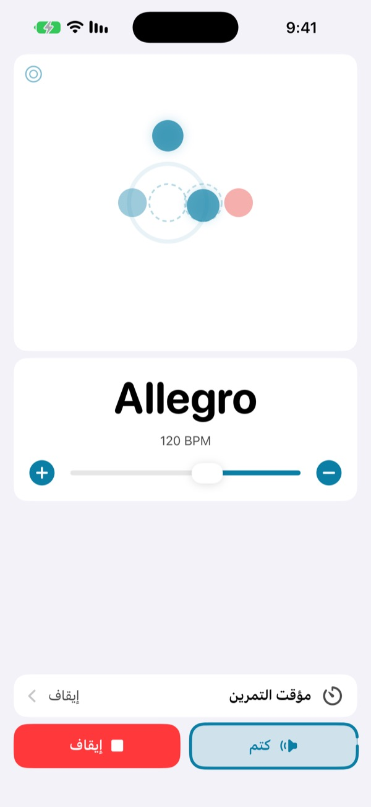
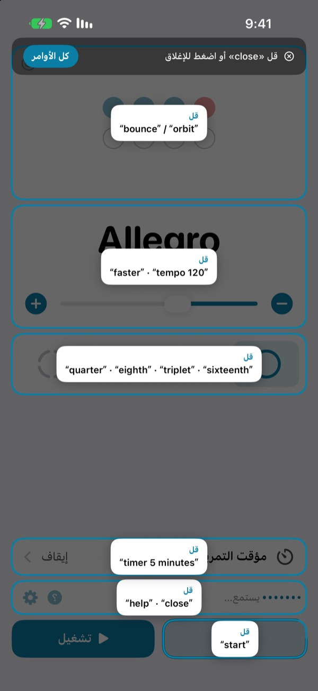
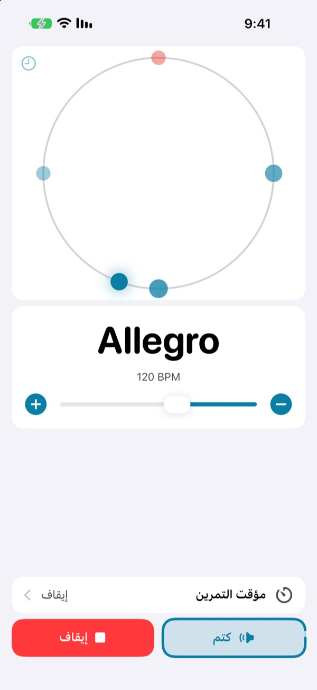
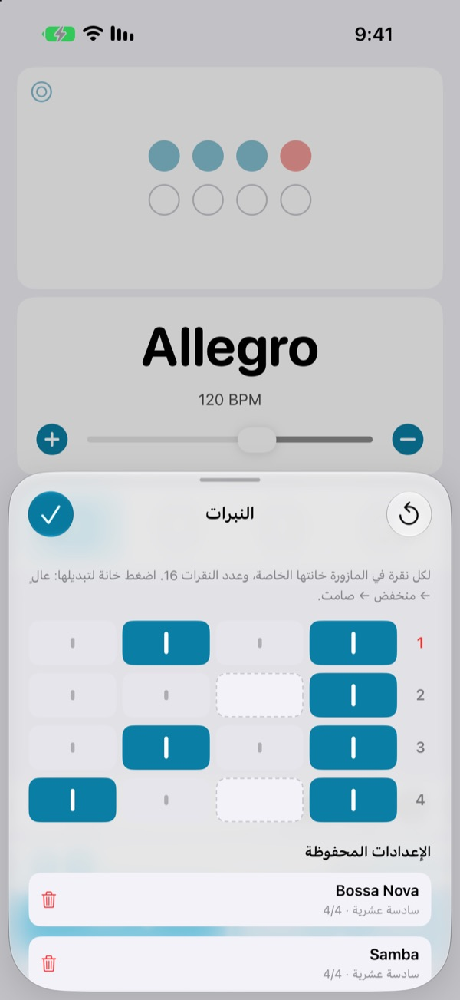

يداك على الآلة،
والإيقاع بصوتك
قل faster أثناء العزف فيتسارع المترونوم. لا داعي للتوقف عن العزف لتغيير السرعة.
المترونوم والتحكم الصوتي مجانًا.

جرّبه بصوتك
اضغط عبارة، أو شغّل الميكروفون وقلها بالإنجليزية. ارفع الصوت، فهناك نقرات.
هل انقطع تركيزك يومًا لأنك أردت تغيير السرعة فقط؟
تضع القوس جانبًا، وتمسك الريشة بفمك، وتضغط الشاشة مرتين، فيضيع منك الإحساس الذي التقطته للتو. مع Not My Tempo تغيّر السرعة بكلمة واحدة وأنت في وضعية العزف نفسها.
قل الأمر فيتبعك فورًا
تكلّم بكلمات إنجليزية قصيرة مثل start وfaster وtempo 120، أو اختر أوامر بالعربية من شاشة الأوامر الصوتية. لا حاجة إلى تفعيل التحكم الصوتي في iOS أو أي إعداد لتسهيلات الاستخدام، فالتطبيق يستمع بمجرد فتحه.
نسيت أمرًا؟ قل help فتظهر الأوامر كلها على الشاشة.

تابع النبضة بعينك أيضًا
اختر بين ثلاث طرق للعرض: الكرة المرتدة والمدار والحلقة. النبضة الأولى في المازورة حمراء وأعلى صوتًا.
وفي عرض المدار، اضغط مع النبضات لترى مدى دقة توقيتك.

احفظ النبرات لكل أغنية
اجعل كل نقرة في المازورة قوية أو خفيفة أو صامتة، واحفظها إعدادًا لكل أغنية. سواء كانت بوسا نوفا أو سامبا، تصنعها مرة واحدة ثم تختارها في المرة القادمة. (Pro)

ثلاث خطوات وتبدأ
- 1
افتح التطبيق
يبدأ الاستماع بمجرد فتحه.
- 2
اسمح بالميكروفون
يُطلب إذن الميكروفون والتعرف على الكلام مرة واحدة فقط.
- 3
تكلّم أو اضغط
كل أمر متاح أيضًا عبر أزرار الشاشة.
ما يمكنك قوله
- start · stop
- تشغيل وإيقاف
- faster · slower
- أسرع أو أبطأ بمقدار 5 BPM
- up · down
- أعلى أو أخفض بمقدار 1 BPM
- tempo 120
- الانتقال إلى سرعة محددة مباشرة
- double · half
- الضعف أو النصف
- three beats
- تغيير الميزان
- quarter · eighth · triplet · sixteenth
- تقسيم النبضة إلى ربعية وثمنية وثلاثية وسادسة عشرية
- louder · quieter · mute
- رفع صوت النقرة أو خفضه أو كتمه
- volume 60
- ضبط مستوى الصوت بالنسبة المئوية
- bounce · orbit
- تبديل طريقة عرض النبضة
- timer 5 minutes
- ضبط مؤقت التمرين
- practice
- رفع السرعة تدريجيًا أثناء التمرين (Pro)
- tune
- فتح الموالف (Pro)
- help
- عرض كل الأوامر
- close · done
- إغلاق الشاشة المفتوحة
الأوامر الافتراضية كلمات إنجليزية (الإنجليزية الأمريكية)، ويمكنك التبديل إلى أوامر عربية من شاشة الأوامر الصوتية. كل أمر متاح أيضًا بالضغط.
المترونوم مجاني، وPro لمن يريد المزيد
مجاني
- التحكم الصوتي كاملًا
- من نبضة إلى 8 نبضات مع إبراز النبضة الأولى
- تقسيم ربعي وثمني وثلاثي وسادس عشري
- ثلاث طرق للعرض: الكرة المرتدة والمدار والحلقة
- الإيقاع بالنقر وفحص التوقيت
- مؤقت التمرين
Not My Tempo Pro
- وضع التمرين: يرفع السرعة كل بضع مازورات حتى تبلغ هدفك
- محرر النبرات مع إعدادات محفوظة لكل أغنية
- الموالف الكروماتي
اشتراك سنوي مع تجربة مجانية، أو شراء واحد مدى الحياة
سيبقى التحكم الصوتي وميزات تسهيلات الاستخدام مجانية للجميع. وإن كنت اشتريت التطبيق قبل ظهور Pro، فكل ميزات Pro متاحة لك بالفعل.
الأسئلة الشائعة
هل يمكنني التحدث بالعربية؟
نعم. الأوامر الافتراضية كلمات إنجليزية قصيرة مثل start وfaster، ويمكنك اختيار الأوامر العربية من شاشة الأوامر الصوتية أو من صفحة التعريف الأولى. وكل أمر متاح أيضًا عبر الأزرار.
لا يفهم ما أقوله.
تأكد أن حالة الميكروفون تظهر «يستمع». إن كان متوقفًا فاضغط «استماع». في الأماكن الصاخبة أو عند تشغيل الصوت عاليًا عبر السماعة، استخدم سماعات الأذن حتى لا تتسرب النقرات إلى الميكروفون، فيصبح الفهم أدق بكثير.
توقف الاستماع من تلقاء نفسه.
لتوفير البطارية يتوقف الاستماع إذا لم يصل أي أمر لبضع دقائق. اضغط «استماع» ليعود.
السرعة التي التُقطت ضعف السرعة الحقيقية أو نصفها.
قل double أو half فتُصحَّح فورًا.
كيف أستخدم الموالف؟
قل tune أو اضغط زر الموجة في بطاقة الإيقاع. اعزف نغمة واحدة، فإذا دخل المؤشر المنطقة الخضراء فالنغمة مضبوطة. وللخروج قل close.
أستخدم التحكم الصوتي في iOS.
أوقف ميكروفون التطبيق وتحكّم فيه بأسماء الأزرار. ولكل زر اسم في VoiceOver.
هل يُرسَل صوتي إلى أي مكان؟
لا يسجل التطبيق صوتك ولا يحفظه. يُستخدم الميكروفون فقط لفهم أوامرك. وتعمل الأوامر الإنجليزية والمترونوم والموالف دون اتصال بالإنترنت.
كيف ألغي الاشتراك؟
من تطبيق الإعدادات > حساب Apple > الاشتراكات. يتجدد الاشتراك تلقائيًا ما لم تلغه قبل نهاية الفترة الحالية بـ 24 ساعة على الأقل. أما خيار مدى الحياة فيُدفع مرة واحدة فقط.
لأي سؤال أو ملاحظة، راسلنا على leeo@kakao.com.